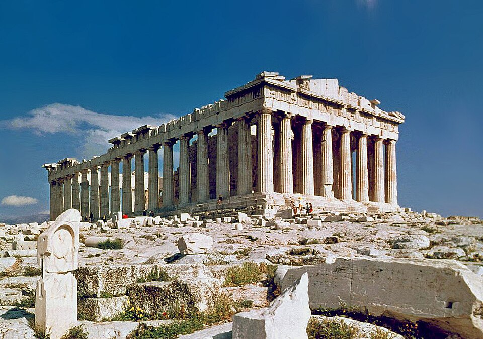

Opening the atlas…

15 CONNECTED JOURNEYS · 354 PLACES TO DISCOVER
Europe is a story.
Walk into it.
Read an empire in a street. Follow an idea across a sea. Find the layers of history in the places you choose to visit.
Begin the journey ↓15regional stories354candidate experiences
Mainland Greece
THE QUESTION THAT LEADS THE JOURNEY
THE SAME STORY, IN SPACE AND TIME
Where it happened. When it mattered.
THE GEOGRAPHY
CandidateIn my tripVisitedNumbers group nearby references
Modern borders for orientation. City and regional reference points are labelled; route lines connect learning stops.
THE HISTORICAL LAYERS
Period from the guideVerified building phaseHistorical context
Century and era bands are approximate. Collections can span several periods; landscape and living-culture experiences need their own kinds of time.
MAKE THE STORY TANGIBLE
Places, objects, and experiences.
A different story is waiting.
Clear the filters or add places to your trip.
TURN A CHAPTER INTO A TRIP
Choose a backbone. Leave room to live.
THE GEOGRAPHIC BACKBONE
SHAPING ROUGHLY TEN DAYS
Interpretation and practical notes
Availability notes follow the guide’s 11 October 2026 edition. Recheck them for your eventual travel dates.
THE STORY CONTINUES ELSEWHERE
Follow a thread across Europe.
All connections for this journey
YOUR PERSONAL JOURNEY
Keep the places. Collect the stories.
0places in your trip
0places visited
0 / 15journeys with a visit
0 / 10experience types explored
Your decisions, notes and ratings stay on this device. Download and restore a copy to move them between devices.
A WIDER EUROPEThe edges of this atlas13 themes and regional extensions +
Keep the guide’s open questions visible while choosing substitutions and future journeys.